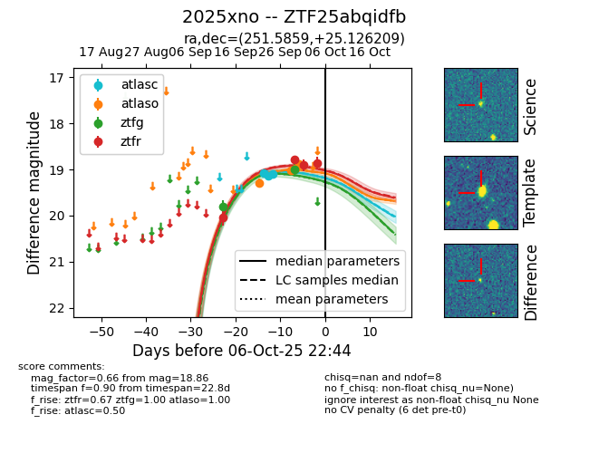
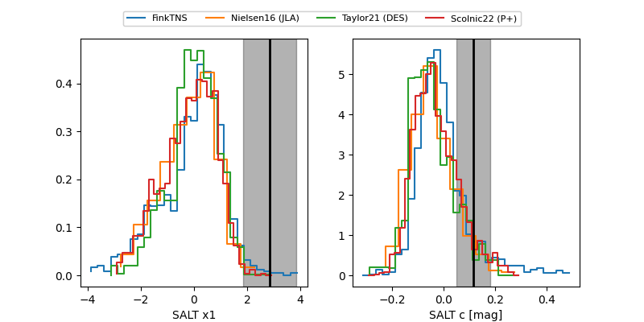

FINK: ZTF25abqidfb
Lasair: ZTF25abqidfb
ALeRCE: ZTF25abqidfb
TNS: 2025xno
YSE: 2025xno
ZTF25abqidfb (ztf,fink)
2025xno (tns,yse)
equatorial (ra, dec) = (251.5859,+25.12621)
galactic (l, b) = (44.8686,+37.72804)


last atlasc=19.09, atlaso=18.89, ztfg=19.00, ztfr=18.86
3 atlasc, 4 atlaso, 2 ztfg, 4 ztfr detections